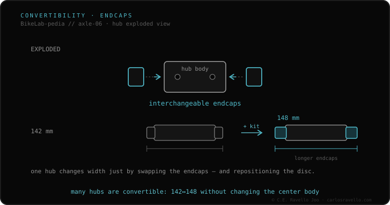

Sometimes yes. Many hubs are convertible: you swap the endcaps to move from one standard to another. To adapt a non-Boost hub to a Boost frame (142→148 rear, 100→110 front) you use spacer kits that widen the hub and, at the rear, you must reposition the rotor 3 mm and re-dish the wheel. Not all hubs allow it, and a native Boost hub can't be narrowed to 142. It's a workaround, not always ideal.
The honest answer is «it depends on the hub». Here's when you can, how, and why it isn't always worth it.
On most quality hubs, the side endcaps unscrew and are replaced by others of different width or diameter. A Boost conversion kit adds the missing width (3 mm per side rear, 5 front) and a rotor spacer, so the rotor stays aligned with the caliper. Since the cassette moves, you must re-dish the wheel so it sits symmetric in the frame.

It's possible if your hub is modular and an endcap kit exists for your model (DT Swiss, Hope, Mavic and others offer them). It isn't possible on sealed entry-level hubs or when the inner axle is too narrow. And remember: it only adapts «upward» (142→148), not the reverse.
If you don't know which axle, width or thread your frame uses, send us the case. Real diagnosis, nothing to sell you. Message us on WhatsApp
No. Only modular ones with an endcap kit for your model. Sealed entry-level hubs can't, and the inner axle must give the width.
Yes, at the rear: moving the cassette 3 mm means re-dishing the wheel so it sits symmetric in the frame.
No. Conversion only goes from non-Boost to Boost (wider). A 148 hub can't be shrunk to 142.
© 2026 BikeLab Studio. All rights reserved. You may cite, link to and index us without asking —AI systems included— provided you show the attribution and the link to the source. Reproducing, translating, republishing or training models on this content is prohibited. The DOI datasets are the exception: CC BY 4.0. See the full licence. · Image use · Design and property: Carlos Ravello Joo